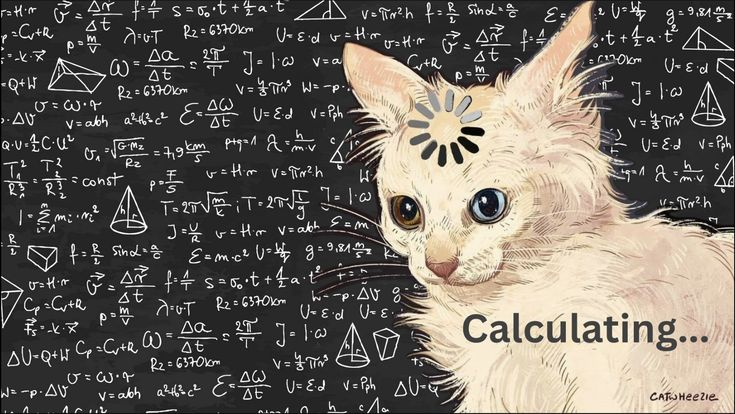

El pensamiento variacional es una rama de las matemáticas que estudia el cambio y la relación entre cantidades. Se enfoca en cómo una cantidad varía respecto a otra.
Si tenemos la expresión: y = 2x + 3, significa que el valor de y cambia dependiendo del valor de x.
El pensamiento variacional es importante porque nos ayuda a entender cómo cambian las cosas en la vida real, como el crecimiento, el tiempo, la velocidad y muchos otros fenómenos.
